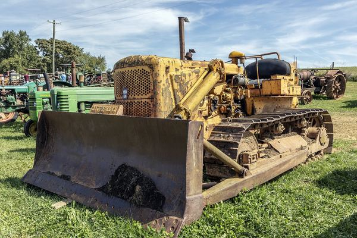
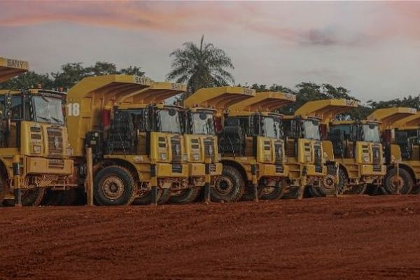
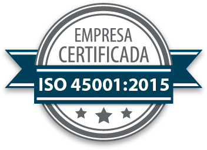

Do trator de esteira em Castelo ao pátio no Rio de Janeiro.
Mais de 35 anos comprando, reformando, alugando e vendendo máquinas.
-

A-1980Um trator de esteira para as lavouras de café de Castelo/ES.Foto ilustrativa: Acroterion, CC BY-SA 4.0. A foto de arquivo da Zocar entra aqui.
-
Foto de arquivo a localizar com a famíliaA-1984
A chegada ao Rio de Janeiro.Espaço reservado.
-

A-hojeFrota no pátio.Acervo Zocar Rio.
Tudo começou com a aquisição de um trator de esteira.
Um dos sócios comprou a máquina para prestar serviços nas lavouras de café de Castelo, no sul do Espírito Santo, que na época estavam em expansão. Vendo que era um bom ramo, a família passou a investir: comprava maquinário usado, reformava e depois alugava. E assim ficou por um bom tempo.
A expansão escolheu o Rio de Janeiro.
Em 1984 os sócios levaram o negócio para o Rio de Janeiro, onde a empresa está até hoje, comercializando caminhões e equipamentos da linha amarela. A filial continua em Castelo/ES.
Certificações
Empresa certificada em qualidade, meio ambiente e segurança.
- ISO 9001Gestão da qualidade
- ISO 14001Gestão ambiental

ISO 45001Saúde e segurança no trabalho
Certificações ISO 9001, ISO 14001 e ISO 45001 e parceria com a MAN Caminhões.